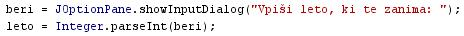
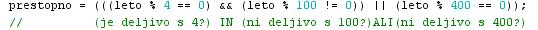
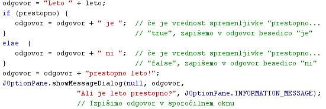
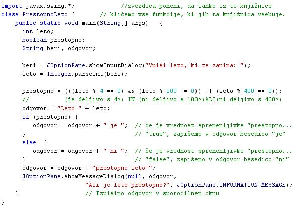

VRSTE ALGORITMOV
- Poznamo veè vrst algoritmov:
- Glede na naèin delovanja:
- Rekurzija ali ponavljanje (iteracija). Rekurzija je metoda, pri kateri algoritem vedno znova klièe samega sebe in se tako ponavlja, dokler ne pride do rešitve zadanega problema. Iteracija ali ponavljanje je metoda, ki ponavadi uporablja katero izmed zank.
- Nadzorovano logièno sklepanje. Taki algoritmi so zaporedje logiènih odloèitev.
- Zaporedni in vzporedni algoritmi. Zaporedni algoritmi so algoritmi, pri katerih se koraki izvajajo zaporedno. Pri vzporednih algoritmih pa se lahko veè korakov izvaja hkrati. To omogoèajo raèunalniki, ki vsebujejo veè procesorjev.
- Deterministièni in nedeterministièni algoritmi. Deterministièni algoritmi rešujejo probleme z natanènimi odloèitvami na vsakem koraku izvajanja. Nedeterministièni algoritmi rešujejo probleme z ugibanjem možnih rešitev. Ugibanje lahko postane bolj uspešno s pomoèjo hevristike, vede, ki se ukvarja z reševanjem problemov.
- Natanèni in približni algoritmi. Natanèni algoritmi vedno pripeljejo do natanène rešitve. Približni algoritmi išèejo približke, ki so blizu toèni rešitvi. praksi je ravno tak pristop najbolj primeren za težke probleme.
- Glede na zasnovo oziroma osnovno idejo:
- Deli in vladaj. To je drobljenje izhodišènega problema na veè manjših in lahko rešljivih problemov.
- Dinamièno programiranje.
- Požrešna metoda
- Linearno programiranje
- Redukcija
- Probabilistièni, genetski in hevristièni algoritmi
- Glede na podroèje uporabe:
- Vsako podroèje znanosti ima svoje znaèilne probleme, za katere obstojajo tudi znaèilne in uveljavljene rešitve. Povezane problemi na podroèju doloèene vede obièajno obravnajo kot celoto. Metode reševanje teh skupin povezanih problemov so skupine ali razredi algoritmov. Primeri razredov algoritmov: algoritmi iskanja, algoritmi urejanja, algoritmi združevanja, algoritmi kombinacij, raèunski algoritmi, algoritmi stiskanja podatkov in tako naprej.
- Glede na zapletenost:
- Algoritme lahko razvršèamo in razlikujemo glede na èas, ki je potreben za njihovo izvršitev, v primerjavi z obsegom vhodnih podatkov.
- Glede na sposobnost raèunanja:
- Algoritmi se med seboj razlikujejo tudi v tem, koliko razliènih tipiènih problemov ali situacij lahko z njimi uèinkovito rešimo. Nekateri se ponašajo torej z manjšo moèjo in sposobnostjo reševanja problemov, saj so primerni za manjše število problemov.
- Primer:
- Predstavitev problema ali naloge: Napiši program, ki prebere letnico ter ugotovi, ali je prebrano leto tudi prestopno leto.
- Analiza problema: Vprašamo se, kaj vse bomo morali postoriti za rešitev problema.
- V tem primeru bomo morali prebrati eno število - letnico, za katero nas zanima, èe je bilo to prestopno leto.
- Nato bomo morali ugotoviti, èe je prebrano leto prestopno.
- Spomniti se moramo, kako ugotovimo, ali je leto prestopno.
- Leto je prestopno, èe izpolnjuje dva pogoja, pri tem pa je prvi pogoj sestavljen iz dveh pogojev:
- Deljivo mora biti s 4 IN HKRATI ne sme biti deljivo s 100.
- ALI pa je deljivo s 400.
- Izpisati moramo ugotovitev, ki je odvisna od rezultata preverjanja zgornjih pogojev. Obstojali bosta dve možnosti. Potrebna bo odloèitev.
-
- Drobitev na manjše probleme: Manjši problemi, ki jih moramo v tem primeru rešiti , so:
- prebrati letnico
- ugotoviti, èe je leto prestopno
- na podlagi ugotovitve v prejšnji toèki zapisati rezultat
- Iskanje in oblikovanje rešitev za manjše probleme:
- prebrati leto in pretvoriti prebrano leto, ki je še niz, v število - to storimo z metodo "Integer.parseInt(spremenljivka)";
- preveriti ali so pogoji za prestopno leto izpolnjeni
- izpisati ugotovitev, ki je odvisna od preverjanja prestopnosti leta; zato bosta obstojali dve možnosti; zato bo potrebna odloèitev
- Zaporedno izvajanje posameznih korakov algoritma: zagon programa, ki ga napišemo s pomoèjo algoritma.
VAJA 32:
- V okolju za pisanje izvorne kode v jeziku Java, za prevajanje in za interaktivno delo zapiši zgornji program "Switch". Pomagaj si s sliko.
- Kodo lahko tudi kopiraš iz te datoteke in jo prilepiš v okolje, v katerem pišeš programèke. Pozor: koda, ki jo boš kopiral/a, vsebuje eno, dve, tri ali štiri napake. Èe želiš, da bo program deloval, moraš napake odkriti in jih odpraviti.
- Izvorno kodo shrani pod imenom "ImePriimek32.java". ImePriimek je seveda tvoje lastno ime in priimek.
- Datoteko "ImePriimek32.java" prevedi.
- Prevedeno datoteko zaženi, preveri rezultat v interaktivnem oknu in poklièi profesorja, da vidi rezultat.
1. Vprašanja:
1. Kaj je algoritem?
2. Naštej nekaj vrst algoritmov glede na naèin delovanja?
3. Naštej nekaj vrst algoritmov glede na zasnovo oziroma osnovno idejo.
4. Zapiši metodo, s katero pretvorimo v Javi niz v število.
5. Zapiši aritmetièno operacijo in njen operator, ki smo ga uporabili v programu te uène enote.
6. Zapiši primerjalne opeacije in njihove operatorje, ki smo jih uporabili v programu te uène enote.
7. Zapiši logiène funkcije in njihove operatorje, ki smo jih uporabili v programu te uène enote.
8. Zapiši, kateri pogojni stavek smo uporabili v programu te uène enote.
9. Zapiši knjižnico, ki smo jo uvozili v program te uène neote.
10. Zapiši metodo, ki smo jo v priemru te uène neote poklicali iz knjižnice?
2. Zapiši od ene do pet kljuènih besed, ki povzemajo vsebino te uène enote.
3. Povezave do dodatnih informacij.
Gradiva na spletnih straneh fakultete za matematiko in fiziko v Ljubljani - prvi vir.
Gradiva na spletnih straneh fakultete za matematiko in fiziko v Ljubljani - drugi vir.
Angleška verzija Wikipedije
|